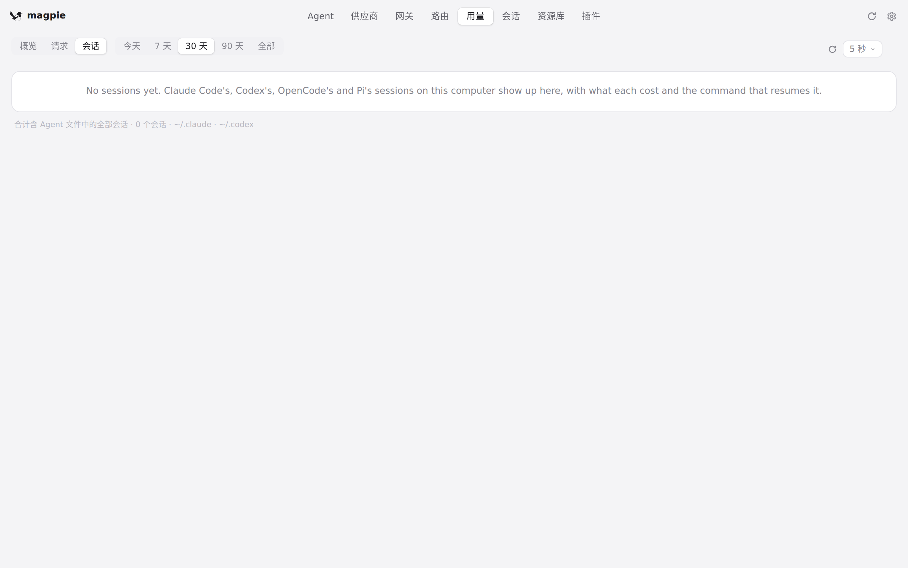
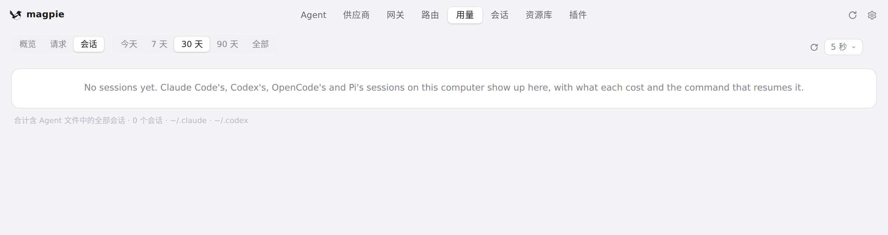

#1019 界面预览
commit 30e26f1 · 回到 PR · Sessions 列表一端：GET /api/sessions 在调用方不传 limit 时不再回退到 sessions.Limit（200）而是读全部会话，页面把列表按每页 200 行分页绘制，多出「显示其余 N 个」按钮，列表下方的说明也改成按当前筛选出的列表计数（显示 X 个中的 Y 个，或整段列表的 N 个会话）。
红线是鼠标走过的轨迹，红色圆环是一次点击；底部文字是这一步在做什么。空格暂停，← → 逐段查看。

会话页的列表与下方计数 · 「会话」标签：会话列表与它下方的说明

会话页的列表与下方计数 · 列表下方的说明：它按什么数这些会话